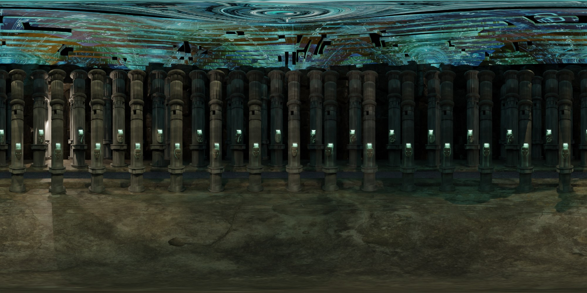
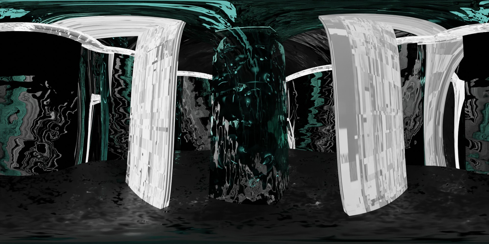
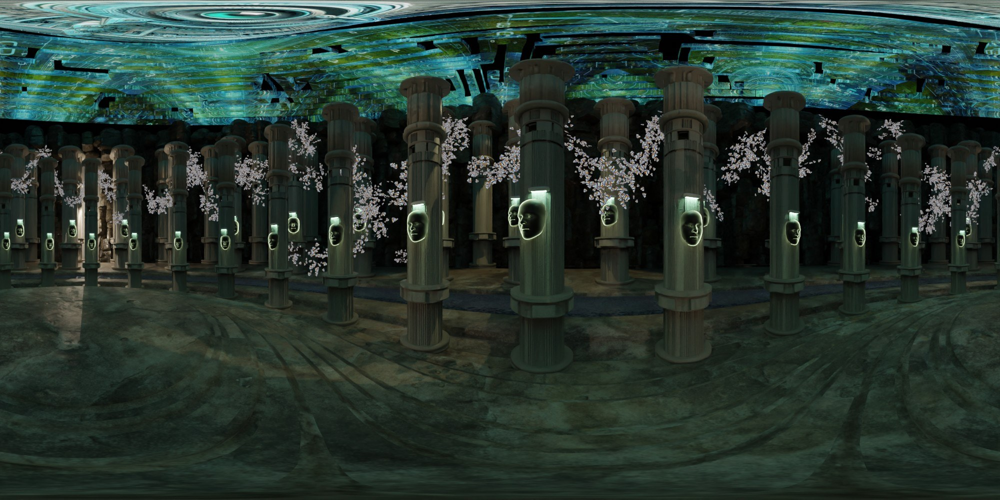
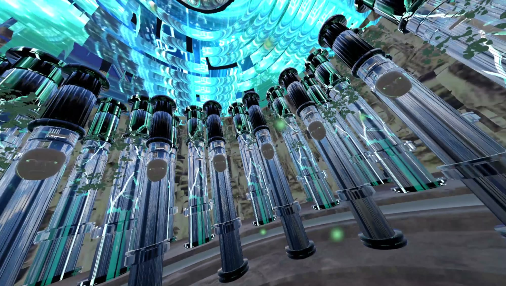
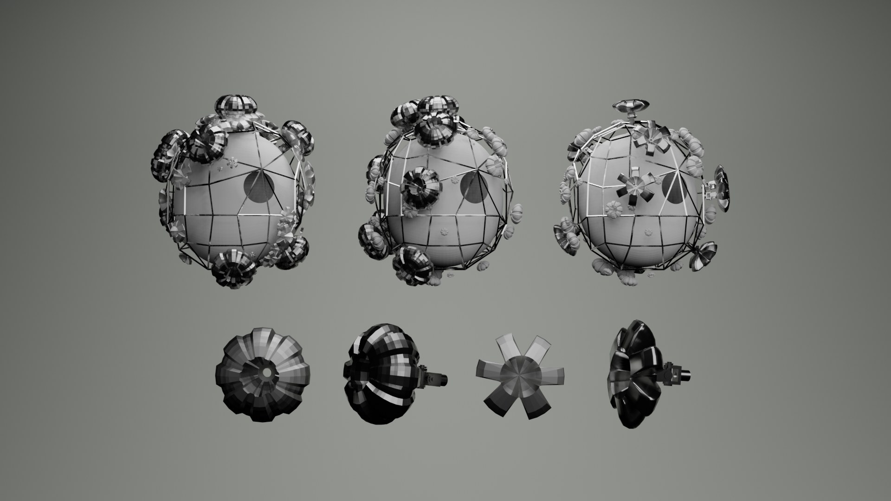
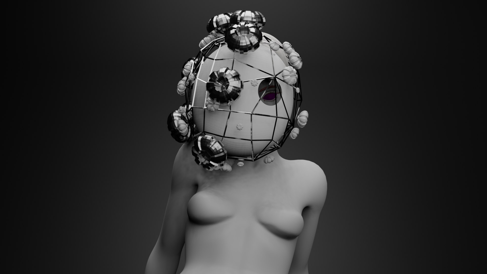
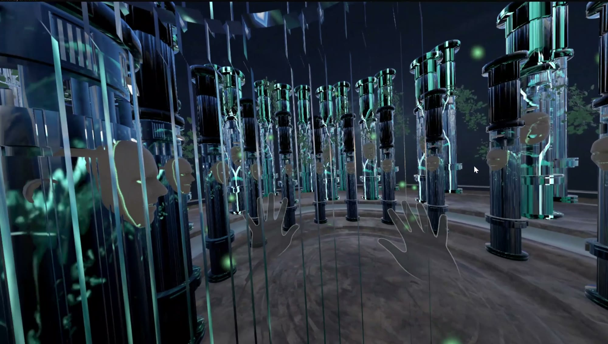

這段影片有聲音，點播放列的喇叭可以開啟。


06 — 2023 — VR environment · Blender → Unity
Compound Eye of Technology科技複眼
兩個 VR 空間，關於網路上的個人資料。Two VR spaces about personal data online.
這件作品把每個網路帳號看成一隻眼睛，會收集觀點，也會把觀點傳出去。VR 裡有兩個空間，一個是由個人與信仰符號構成的圓形大廳，另一個是鏡面房間，裡面的柱子代表被存下來的個人資料。
The piece treats each online account as an eye that collects points of view and passes them on. There are two spaces: a round hall built from symbols of personal and religious ties, and a mirrored room whose pillars stand for stored personal data.
一開始可以自由走動，自己決定看哪裡；場景轉換之後，觀者的位置被固定下來，視角變成房間裡的其中一個畫面。大廳裡戴面具的人物是我在 Blender 建模的。
At first the visitor can walk freely and choose where to look. As the scene changes, their position is fixed and their view becomes one of the screens in the room. The masked figures in the hall were modelled in Blender.
- Medium
- VR (Meta Quest), Blender modelling and baking, Unity, 360° renders
- Scenes
- 1 · a temple-like round hall; 2 · a mirrored closed room whose pillars are the interface between people and the system
- Role
- Concept, modelling, Unity build (solo)
- Year
- 2023
- 3D
- Blender modelling, baking, 360° renders
- Engine
- Unity, Meta Quest build
- Concept
- Accounts as eyes that collect and pass on views
- Period
- Sep–Dec 2023




